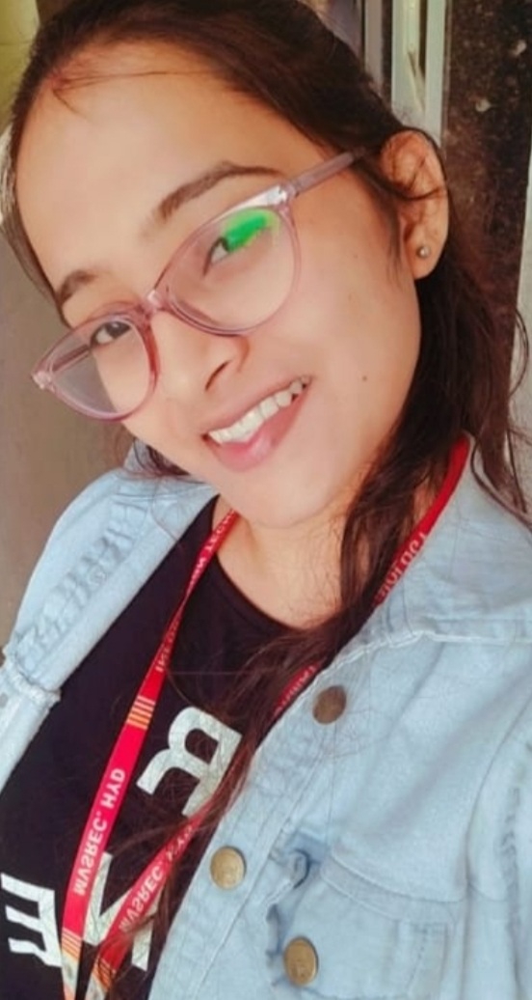

MACHA NANDITHA | |||
|---|---|---|---|
|  FrontEnd Developer |
About me |
||
| I'm Nanditha, An Enthusiastic Information Technology student with a passion for learning Web technologies.I consider myself as a responsible and orderly person. Seeking an opportunity to work at a dynamic and creative organization,where I can embark my career and build a valuable Skill set. |
|||
Technical Skills |
|||
Contact details:Phone No: 8106286806 Gmail:nandithamacha90@gmail.com Location: Hyderabad Social Network:Linkedin GitHub | |||
FrontEnd |
BackEnd |
Database |
|
HTML |
C |
SQL |
|
Recent projects |
|||
Use of digital technology to predict water quality |
This project aims to develop and implement a solution that can accurately predict water quality by analysing various water parameters and ensuring safe levels for utilization of water and also to enhance awareness of water quality among users. |
||
Medical Insurance cost prediction |
There is a pressing need for advanced predictive models leveraging ML to improve precision in forecasting health care expenditure. This study aims to contribute the enhancement of financial planning and risk management in medical industry. | ||